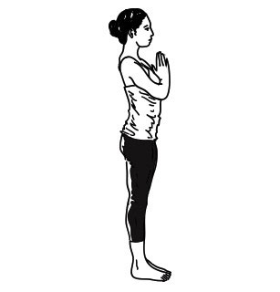
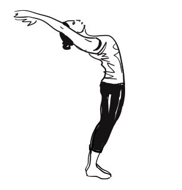
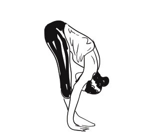
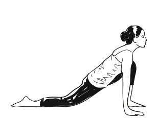
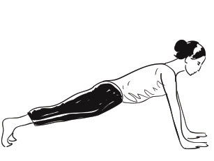
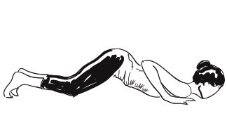
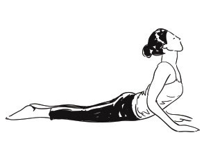

A comprehensive 12-step flow to vitalize the entire body and mind

Stand at the edge of your mat, keep your feet together and balance your weight equally on both feet. Expand your chest and relax your shoulders. As you breathe in, lift both arms up from the sides, and as you exhale, bring your palms together in front of the chest in prayer position.

Breathing in, lift the arms up and back, keeping the biceps close to the ears. In this pose, the effort is to stretch the whole body up from the heels to the tips of the fingers. Tip: Push the pelvis forward slightly and reach upward with fingers.
Breathing out, bend forward from the waist keeping the spine erect. As you exhale completely, bring the hands down to the floor beside the feet. Tip: Bend knees slightly if needed, then gently straighten.
Breathing in, push your right leg back, as far back as possible. Bring the right knee to the floor and look up. Tip: Ensure the left foot is placed firmly between both palms.
As you breathe in, take the left leg back and bring the whole body in a straight plank line. Tip: Keep your arms perpendicular to the floor.
Gently bring your knees down to the floor and exhale. Take the hips back slightly, slide forward, rest your chest and chin on the floor. Hands, feet, knees, chest and chin touch the ground.
Slide forward and raise the chest up into Cobra pose. Keep your elbows slightly bent with shoulders away from ears, looking up towards the ceiling.

Breathing out, lift hips and tailbone up into an inverted 'V' posture. Try keeping heels on the ground and lift tailbone to deepen the hamstring stretch.

Breathing in, bring the right foot forward between the hands. Left knee rests on the floor, press hips down and gaze upward.

Breathing out, bring left foot forward next to right foot. Keep palms on floor and gently straighten knees.

Breathing in, roll spine upward. Stretch hands up and bend slightly backward, reaching upward with long breaths.

As you exhale, straighten the body and bring arms down. Relax in this posture and observe the calm, energizing sensations.